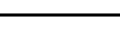

The symbol above shows a mirror plane parallel to the plane of the screen.
(Note that for non-orthogonal axes, the angle formed by the symbol
is the same as the cell angle rather than 90°.)
When present, this symbol is shown at the bottom left-hand corner of the
space-group diagram.
A fractional value next to the symbol indicates the height of the mirror
above the XY plane.
A mirror plane perpendicular to the c-axis and passing through the
origin, i.e. the plane x,y,0, will have
the corresponding symmetry operator x,y,-z.
This plane has the written symbol "m".

The symbol shown above corresponds to a mirror plane perpendicular to the plane
of the screen with its normal perpendicular to the solid line.
A mirror plane perpendicular to the b-axis and passing through the
origin, i.e. the plane x,0,z, will have
the corresponding symmetry operator x,-y,z.